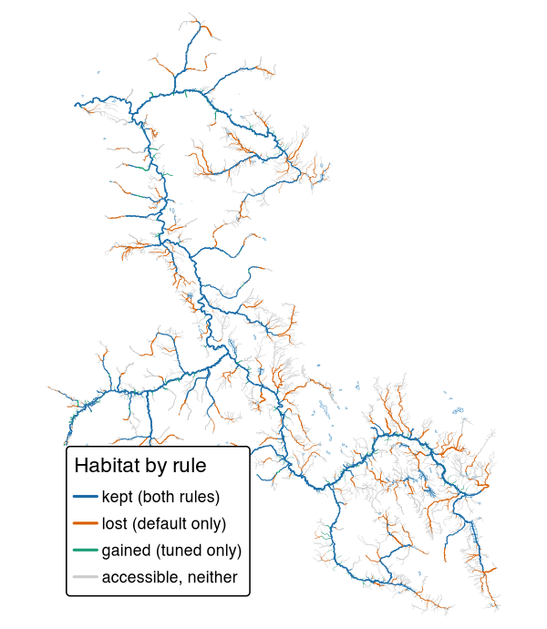

Fisheries evidence and tuned habitat thresholds for BC watershed groups
knowledge gathers what is known about where fish live in British Columbia’s streams, a watershed group at a time: the Province’s fish sampling records, past reports and the published literature. From the fish records it tunes, where they allow, the thresholds that link’s habitat models use to decide where a species can spawn and rear, such as the smallest stream and the steepest gradient for juvenile chinook rearing, and compares the tuned rules with the ones link uses today. Those models show restoration and fish passage planning where habitat lies on a stream network.

Chinook rearing habitat in the Bulkley River watershed group, around Smithers and Houston, under link’s default rule and the rule tuned here. Blue streams are habitat under both, orange only under default, green only under the tuned rule; grey streams are open to chinook but habitat under neither. Here the tuned rule drops more than it adds.
Installation
pak::pak("NewGraphEnvironment/knowledge")knowledge is under active development and its functions change between releases (see NEWS). Pin a release for reproducible work: pak::pak("NewGraphEnvironment/knowledge@vX.Y.Z").
The evidence tables live in the repository, not the package, so most work happens in a clone with the package loaded from the source tree (pkgload::load_all()). The scripts that build them run in the order of scripts/README.md. Many read a PostgreSQL database holding the BC Freshwater Atlas through fwapg, found by the standard PG* environment variables, and the tuning also reads link’s province-wide run and wet’s flows there. Others need other databases, tools and credentials, among them a bcfishpass database, a synced Zotero library and Web API key, Ollama, AWS credentials and Python.
The FDIS electrofishing extract is public as the Province supplied it, under s3://fresh-bc/fdis/, and so are the visit tables built from it, as Parquet under s3://fresh-bc/knowledge/fdis/. The bucket does not list: start from the extract’s provenance note, which links the published tables’ manifest.
Example
The tuned thresholds are one table. Each rule’s parts are rows, with the link parameter each fills where link has one:
th <- read.csv("data/thresholds.csv")
ch <- th[th$rule_id == "CH_rear_v1", c("component", "link_parameter", "value", "unit")]
print(ch, row.names = FALSE)
#> component link_parameter value unit
#> size rear_mad_min 0.75 m3/s
#> gradient rear_gradient_max 0.11 fraction
#> exception_q rear_river_discharge_min 3.00 m3/s
#> exception_d rear_river_distance_max 1000.00 mOn a stream line, the tuned rule passes a segment for chinook rearing where its gradient is at most 11 % and either its mean annual flow is at least 0.75 m³/s or a river of at least 3 m³/s lies within 1 km downstream. Access and link’s other steps then apply as they do to default.
Learn more
- How the chinook rearing threshold was chosen and what it draws: the answer and the map first, why a nearby river matters, how sure we are, and how it was done.
- Choosing habitat thresholds from where fish were caught: the method every species’ rule is chosen by, and its limits.
- What is known: one file per topic, from the FDIS export and the cited literature to the tuned rules.
- Function reference
Ecosystem
| Package | Role |
|---|---|
| knowledge | Fisheries evidence and tuned habitat thresholds for BC watershed groups (this package) |
| fresh | Stream network modelling engine: segment, classify, cluster, aggregate |
| link | Intrinsic habitat models: develop, test and communicate |
| wet | Stream flow and water temperature for BC’s Freshwater Atlas |
| flooded | Delineate floodplain extents from DEMs and stream networks |
| drift | Track land cover change within floodplains over time |
| floodplains | Floodplain and land cover change modelling for BC watershed groups |
| stac_floodplains_bc | STAC catalogue of floodplain land cover change in BC, 2017-2023, by watershed group |
| cd | Climate departure analysis from ERA5-Land reanalysis |
| fly | Estimate airphoto footprints and select photos that cover a study area |
Data and methods it builds on
Fish records come from the Province of British Columbia: the Fisheries Data Information System (FDIS) electrofishing extract it supplied, Known BC Fish Observations, and the fish data submissions filed in EcoCat, which also holds the past reports. Stream crossings come from PSCIS. The FDIS visits are placed on the stream segments of link’s province-wide run, built on the BC Freshwater Atlas through fwapg, with flows from wet and dams from the Canadian Aquatic Barriers Database, and each visit is matched to the records it produced in bcfishobs. The floodplain panels of the comparison maps in research/fig/, and the floodplain areas in data/compare/floodplain.csv, come from stac_floodplains_bc. Some crossing and report scripts also read a bcfishpass database. fwapg, bcfishobs and bcfishpass are Simon Norris’s (Hillcrest Geographics), bcfishpass maintained with contributions from many groups. Each value taken from the literature carries a verbatim quote, checked against its source.
Citation
citation("knowledge")